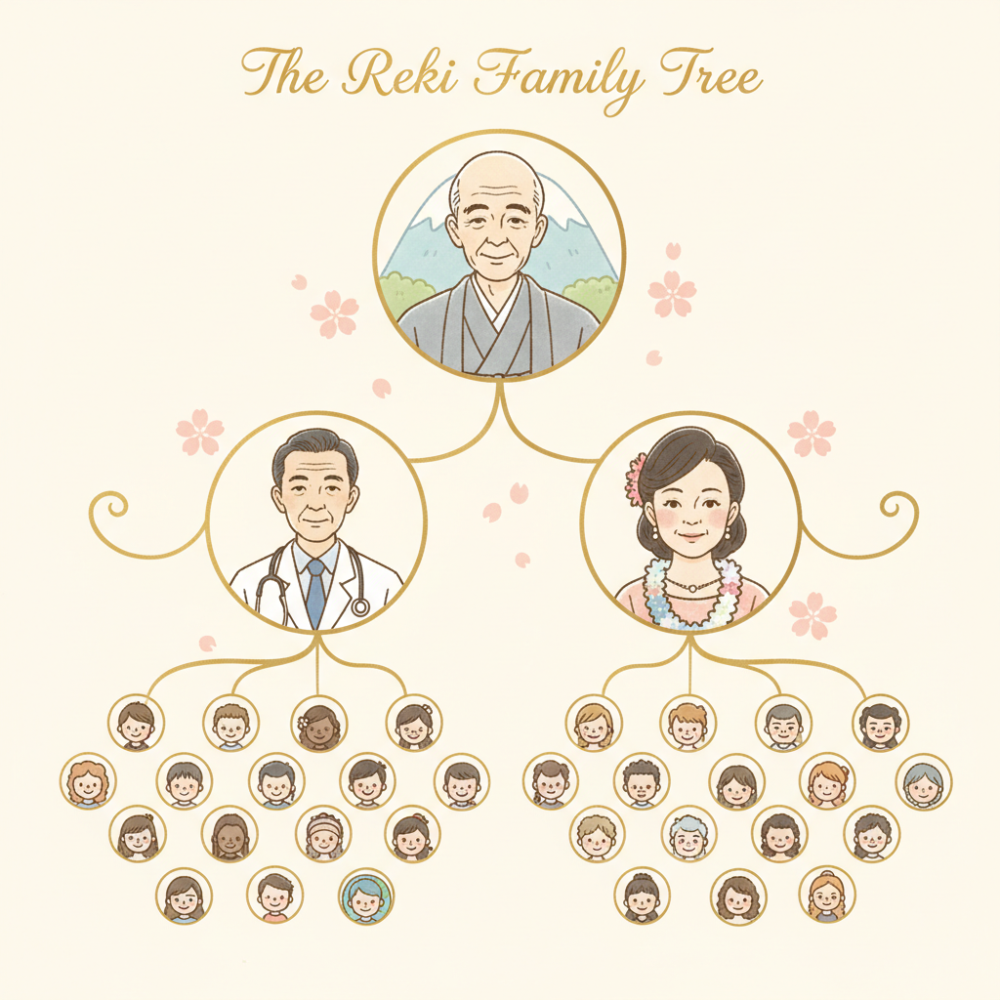
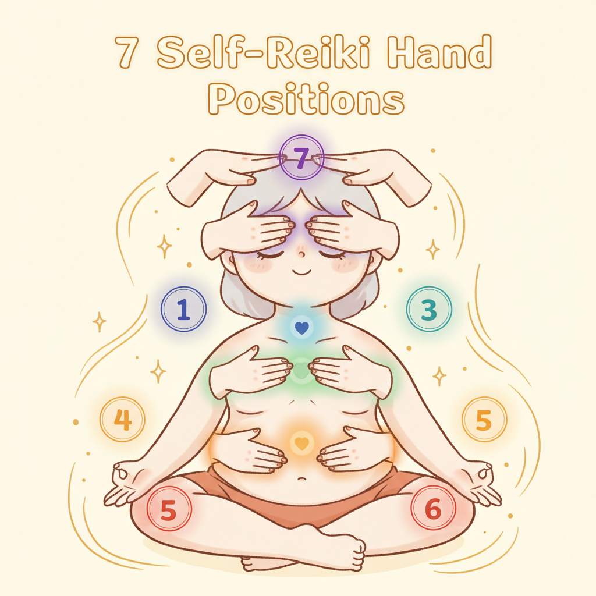

灵气不神秘，是生物场科学
一聽到「灵气」，很多人脑子里浮现的畫面大概是某个人闭著眼睛，手懸在别人身体上方，空气里瀰漫著一种说不清楚的神秘感。
但如果你把那层神秘的濾镜拿掉，事情其实很单纯。你的身体每一秒都在产生电讯号，心脏跳动有心电图（ECG），脑波活动有脑电图（EEG），肌肉收缩有肌电图（EMG）。這些都是可以被仪器量测的生物电场。
1990 年，物理学家 Zimmerman 用超导量子干涉仪（SQUID）测量治疗师的手掌，发现在施做灵气时，手掌发出的生物磁场频率在 0.3 到 30 Hz 之间。1992 年，日本学者 Seto 用更灵敏的设備确认了同样的发现。這个频率范围，和臨床上用来促进组织修复的脈冲电磁场疗法（PEMF）幾乎一致。
美国国立卫生研究院（NIH）底下的国家补充与整合健康中心（NCCIH）把灵气归类为「生物场疗法」（biofield therapy）。不是把它说成超自然现象，而是承认人体确实存在可量测的能量场，灵气就是有意识地运用這个场。
灵气的传承：从一个人到全世界

灵气的五大原則 Gokai
臼井先生留下了五句话，日文叫「五戒」（Gokai）。不是宗教戒律，更像是一套每天早上提醒自己的正念原則。每一句都用「就在今天」开头，因为你不需要承諾一辈子怎样，你只需要管好今天。
灵气等级制度
传统灵气分三个等级。每升一级都需要接受一次「灌顶」（attunement），由灵气大师透过特定的手法，帮你打开或强化能量通道。聽起来很玄，但你也可以把它理解成：有经验的人带你做一次深度的身体觉察校准。
Level 1 初传 Shoden
- 学習灵气的历史、原理和五大原則
- 接受第一次灌顶，启动手掌的能量感知
- 学会 12 个基本手位，用在自己身上
- 开始 21 天自我灵气练习（每天 15-30 分钟）
- 可以帮家人和寵物做基本的灵气
- 這一级就足够日常使用了。大部分人学完 Level 1 就能明显感受到差别
Level 2 奧传 Okuden
- 学習三个灵气符号（Power / Harmony / Connection）
- 具備远距发送灵气的能力，不需要实体接触
- 可以对过去的记忆和未来的情境发送灵气
- 开始进入情绪和心理层面的深度工作
- 這一级开始可以正式为他人做灵气疗程（对外服务）
- 灌顶后能量感会明显增强，手掌温度变化更明显
Level 3 / Master 神秘传 Shinpiden
- 学習大师符号（Master Symbol），能量通道完全打开
- 具備为他人灌顶的资格，可以教学和培训新的灵气练习者
- 深入了解灵气的哲学和灵性层面
- 有些学派把 Level 3 拆成 3A（进階练习者）和 3B（教师），有些不拆
- 「Master」不代表「大师」，比较接近「已经掌握基本功的人」
Holy Fire Reiki 聖火灵气
- 由 William Lee Rand 于 2014 年在国际灵气培训中心（ICRT）发展出来的现代版本
- 用「Placement」和「Ignition」取代传统的灌顶（Attunement）
- 强调灵气的净化和轉化功能，能量感受通常被描述为更温暖、更柔和
- 保留传统臼井灵气的所有基础，加上新的冥想和练习方式
- 不是取代传统灵气，比较像是在原有基础上長出的新枝
灵气 × 脉轮 × 精油 对照

做灵气的时候，手放在不同的身体部位，对应到不同的脉轮。每个位置你可能感受到的东西不一样，有的人觉得热，有的人觉得麻，有的人什麼都没感觉但做完很想睡。搭配对应的精油，可以让觉察更清晰。不是必要的，但很多人觉得有帮助。
海底轮 Root Chakra
臍轮 Sacral Chakra
太阳神经叢 Solar Plexus Chakra
心轮 Heart Chakra
喉轮 Throat Chakra
眉心轮 Third Eye Chakra
顶轮 Crown Chakra
自我灵气练习（初学者版）
不管你有没有接受过灵气灌顶，這套 15 分钟的练习你今天就可以做。把它想成是用双手帮自己做一次全身掃描，不是在治什麼病，是给身体一段被关注的时间。
-
1准备：找个安静的地方坐下
椅子或地板都行。手机调静音。深呼吸三次，每次吸气四秒、吐气六秒。不需要特别的姿势，舒服就好。
-
2启动：双手搓热 30 秒
两隻手掌对搓，速度中等，直到掌心明显发热。然后把双手分开大约五公分，感觉两掌之间有没有一种微微的阻力或磁力感。那个感觉就是你的生物电场。
-
3眉心：双手放在眼睛上（2 分钟）
掌心轻轻盖住双眼，不压迫。手指自然搭在额头上。黑暗加上温热的掌心，眼睛会很快放松下来。如果感到眉心微微脈动，那就对了。
-
4喉嚨：双手放在喉嚨两側（2 分钟）
手掌轻触脖子两側，不需要握住。這个位置连接甲状腺。如果你平常習慣吞下很多没说出口的话，這里可能会有比较明显的感觉。
-
5心口：双手交叠放在胸口（2 分钟）
左手在下、右手叠上去，放在心口正中央。這是大部分人做灵气时最有感觉的位置。呼吸自然就好，不用刻意深呼吸。如果想哭，就让它流。
-
6上腹：双手放在胃的位置（2 分钟）
掌心对著太阳神经叢（肋骨下方、肚臍上方）。压力和紧张最容易卡在這里。你可能会聽到肚子开始咕嚕叫，這代表腸胃在释放紧繃。
-
7下腹：双手放在肚臍下方（2 分钟）
掌心对著下丹田的位置。這里连结创造力、情绪和生命力。静静地感受掌心和腹部之间的温度交換。
-
8收尾：双手回到大腿上，感受全身（1 分钟）
什麼都不做，就坐著。从头顶到脚底掃描一次，注意哪里觉得温暖、哪里还是涼的、哪里有感觉、哪里没有。不需要做任何判断，只是观察。慢慢睁开眼睛。
你现在就可以試的 3 件事
上面那套 15 分钟的练习太長？没关係。下面三件事，任何一件都可以在你看完這句话之后马上做。不需要准备，不需要安静的空间，坐在办公桌前就行。
搓手 30 秒，感受手掌热度
搓热双手，然后慢慢分开 5 公分。你会感觉到两手之间有一股轻微的阻力或温热感。那不是错觉，是你的生物电场。每个人都有，不需要任何训练。
手放在额头 2 分钟
闭上眼睛，把温热的手掌轻放在额头上。你可能会感觉到微微的脈动、温热、或者一种奇妙的放松。這就是最基础的灵气，用你自己的手温暖自己。头痛的时候試試，比吃止痛药先。
睡前手放在心口 3 分钟
躺在床上，双手交叠放在胸口。不需要想任何事。只是感受手掌的温度和心跳。一分钟后你会发现呼吸变慢了。這不是灵气的神奇力量，是副交感神经被启动了（vagus nerve stimulation）。但效果是真的。
灵气的科学研究现况
講完感性的部分，来看看理性的那一面。灵气的研究状态是什麼？用一句话说：证据是混合的，但方向是正面的。我觉得最誠实的态度是不夸大也不否定，把现有的研究摊开来让你自己判断。
| 研究领域 | 主要发现 | 证据强度 |
|---|---|---|
| 疼痛管理 | Hartford Hospital 研究显示，灵气组的疼痛评分降低了 56%。2019 年 Journal of Evidence-Based Integrative Medicine 系统性回顾认为灵气对疼痛有中等程度的正面效果。 | 中等 |
| 焦虑与忧鬱 | 多项随机对照試验显示灵气对焦虑的改善优于安慰剂。2017 年一项统合分析发现灵气对忧鬱症状有统计显著的正面影响。 | 初步正面 |
| 癌症辅助照护 | 美国超过 800 家医院将灵气纳入癌症辅助照护项目。研究重点不在「治癌」，而在改善化疗期间的生活品质、减少噁心和疲劳。 | 臨床採用广泛 |
| 手术后恢复 | 部分研究显示接受灵气的术后患者，止痛药用量减少、住院天数缩短。但样本数普遍偏小。 | 初步正面 |
| 生物磁场 | Zimmerman（1990）和 Seto（1992）以 SQUID 磁力计测量到治疗师手掌发出 0.3-30 Hz 的生物磁场，与促进组织修复的 PEMF 频率重叠。 | 可重复观测 |
| 安慰剂效应 | 灵气研究最大的方法学挑战：很难设计「假灵气」的对照组。接受者知道有人在旁边、被关注著，這本身就有紓压效果。 | 研究限制 |
科学家目前还无法完全解释灵气的作用机制。可能的假说包括：生物磁场的共振效应、副交感神经的启动（放松反应）、以及触碰本身带来的催产素释放。這些都是可以被研究的方向，只是目前大规模、高品质的臨床試验还不够多。
不过，有一件事是确定的：灵气在正规使用下没有已知的副作用。它不侵入、不用药、不冲突现有的医疗。所以即使机制还没完全搞清楚，风险也非常低。